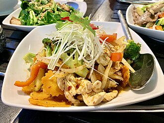

Home
Thai Chicken

Description
This crockpot Thai chicken is a family-pleasing slow cooker
recipe that's super easy to make. Start this dish in the
morning, and it will be ready when you get home. Just add your
favourite rice. Chicken thighs are better in this recipe than
breast meat, which dries out in the crock poit; plus, thighs
are more economical. The strength of the hot salsa dissipates
when cooked, so this dish is not too spicy. You may even want
to serve hot-sauce as an accompaniment.
Ingredients
- 3⁄4 cup hot salsa
- 1⁄4 cup chunky peanut
butter
- 3⁄4 cup light coconut
milk
- 2 tablespoons lime juice
- 1 tablespoon soy sauce
- 2 tablespoons grated fresh ginger
- 2 pounds skinless chicken thighs
- 1⁄2 cup chopped peanuts,
for topping
- 2 tablespoons chopped cilantro, for topping
Steps
- Combine salsa, peanut butter, coconut milk, lime juice,
soy sauce, sugar, and ginger in the slow cooker; mix
well. Place chicken thighs in sauce; spoon sauce over
chicken to coat.
- Cover and cook on Low until chicken is very tender and
sauce has thickened, 8 to 9 hours. A meat thermometer
inserted into the thickest part of a thigh should read
at least 165 degrees F(74 degrees C). Garnish with
peanuts and cilantro before serving.